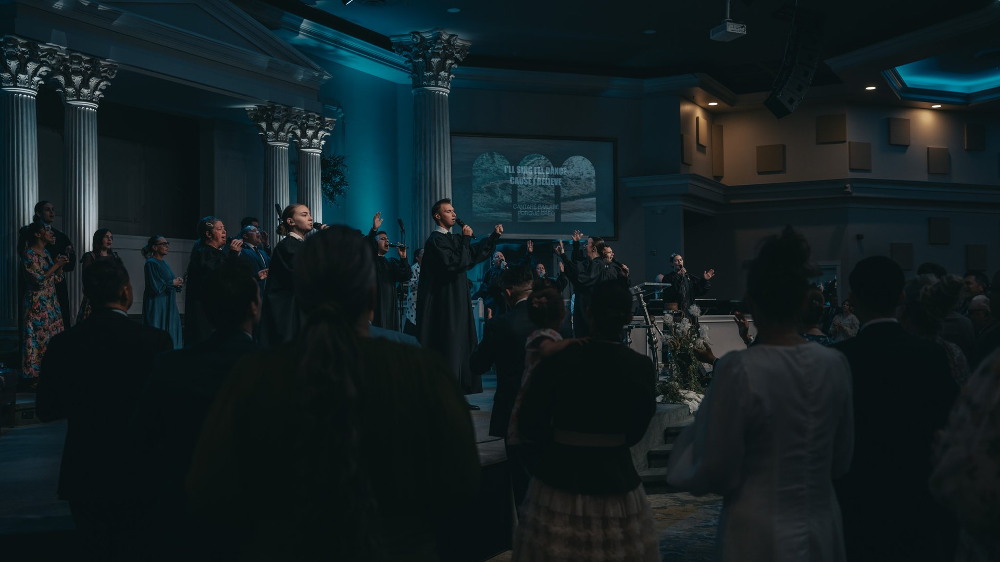
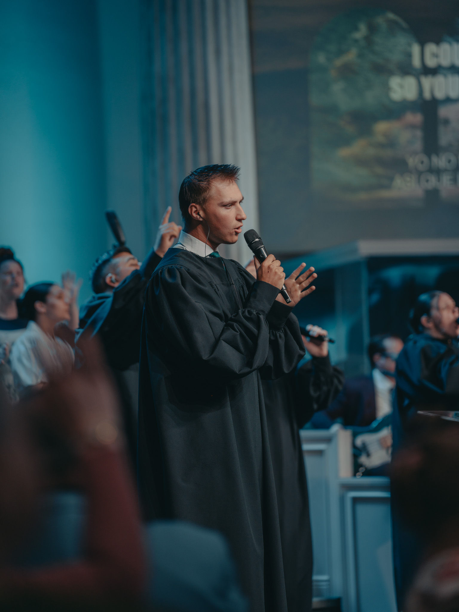

Bakersfield, California
We Are So Glad You Are Here.
A church rooted in truth and alive in the Spirit. Join us every Sunday and Tuesday.
Our Pastor & Ministries.

Hear from Pastor Kevin Bradford and explore the ministries that make GBFPC a home for every person, every age, and every season of life.
A Place for
Everyone.
Our Leadership
Kevin Bradford and his family have served Greater Bakersfield's First Pentecostal Church full-time since 1992, and as senior pastor since October 2010. He holds a degree in Business Administration from CSUB and a master's in Biblical Studies from Fuller Theological Seminary.
See Our Leadership
Bishop Leon Frost has served First Pentecostal Church for most of his life. Known for his anointed teaching, preaching, stature, and leadership, he guided GBFPC through over 30 years of growth and ministry. His legacy continues to shape the church today.
See Our Leadership

Giving
Is Worship.
We believe generosity is a response to God's grace — not an obligation. When you give, you partner with the work God is doing in Bakersfield and beyond.
Now It's Easier
Than Ever.
Join us for service in-person or online. It's never too late to get involved in what God is doing through GBFPC.